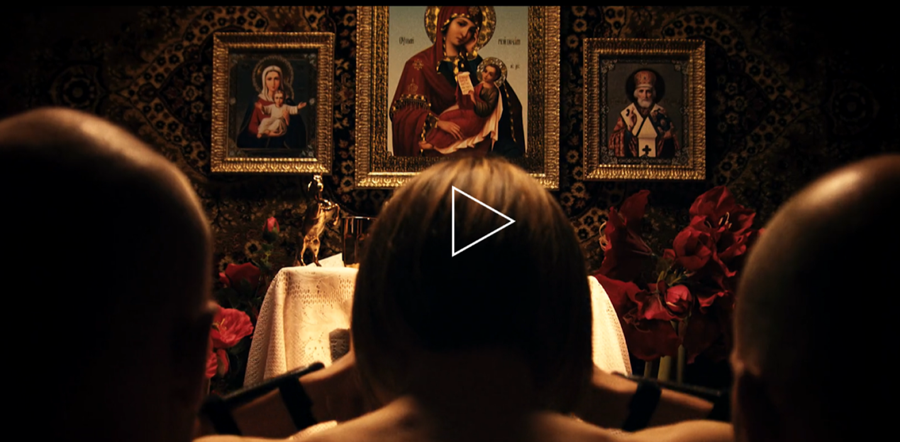
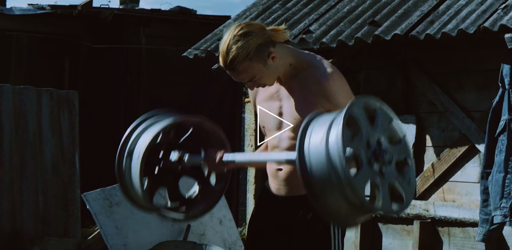
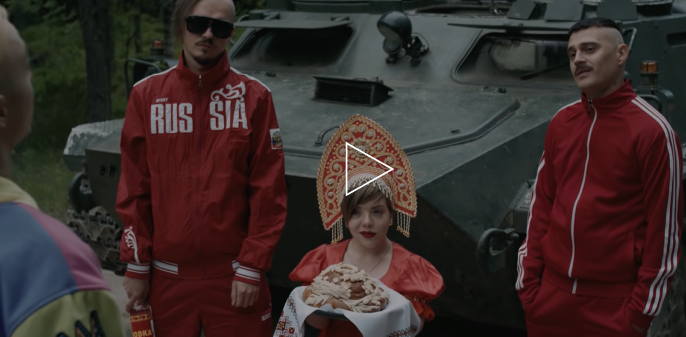
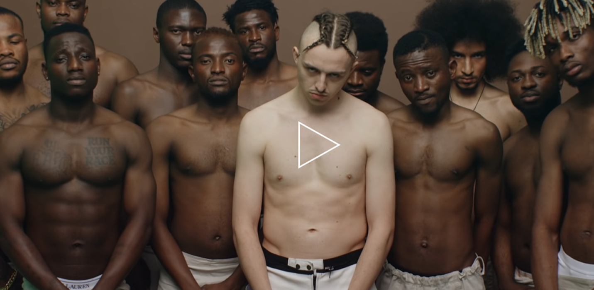

-WE LIVED IN A ONE-ROOM APARTMENT, THIS ROOM WAS BOTH MY PARENTS' BEDROOM AND MY PSEUDO- ROOM, WHICH WAS SEPARATED FROM THE PARENTAL PART BY A SECTION, THE BACK OF WHICH WAS COVERED WITH PHOTO WALLPAPERS WITH MOTORCYCLISTS.
-I HAD A CASSETTE PLAYER AND EMINEM'S CASSETTE, THE ONE WITH THE RED CURTAIN ON THE COVER. I LISTENED TO IT AND TRIED TO QUICKLY TYPE ON A TYPEWRITER, INVENTING MY WORDS IN NON-EXISTENT ENGLISH.
-THE DUDES AND I WERE JAMMING, JOKING: LET ME, I THINK, I’LL READ SOMETHING... IT WAS ALL A JOKE.
BUT I IMMEDIATELY FELL IN LOVE WITH THIS THEME – AND AWAY WE GO.
MY GIRL USED TO SAY TO ME: “DUDE, YOU ARE ... DOING SOMETHING”.
BUT THAT DID NOT STOP ME, I CONTINUED TO DO IT..
SCROLL ↓ SCROLL ↓ SCROLL ↓ SCROLL ↓ SCROLL ↓
CAREER DEVELOPMENT
TOMMY CASH - PRORAPSUPERSTAR
THE world IS MINE I penetrate it WITH MY BOTH HANDS
Later came the composition: ‘EUROZ DOLLAZ YENIZ’.
In the spring of 2014, the debut album ‘EUROZ DOLLAZ YENIZ’
was released, consisting of nine tracks.
2014
CLIP
“EUROZ DOLLAZ YENIZ”
2014
ALBUM
“EUROZ DOLLAZ YENIZ”
2015
CLIP
“GIVE ME YOU MONEY”
2016
CLIP
“WINALOTO”

collaboration with Little Big
In 2015, Thomas released two videos: “LEAVE ME ALONE” and “GIVE ME YOU MONEY”, the second together with the group “Little Big”, which suggested Tommy to collaborate.


decision remain independent
After “WINALOTO” clip, Thomas received many offers from well-known labels, but the artist preferred to remain independent.

Tommy about independence:
– WE REALIZED RECENTLY – I NEED TO BE ALONE. IT’S SO COMMONPLACE – FOR 25 YEARS ALREADY RAPPERS OF SIX HAVE BEEN WICH A DJ ON STAGE. I WANT TO DO IT DIFFERENTLY. – I REALLY LIKE MARINA ABRAMOVICH, AND LOOKING AT HER, I THINK HOM I CAN REACH A NEW LEVEL ON STAGE: HERE I AM ALONE ON STAGE, HOW CAN THIS BE FURTHER DEVELOPED? I WANT TO BE ANDY WARHOL FROM THE WORLD OF RAP. NOW IS A DIFFERENT TIME, IT IS NECESSARY TO EXPAND THE SCOPE OF WHAT IS INCLUDED IN THE CONCEPT OF “ARTIST”.
TOMMY STYLE
TOMMY CASH – LEAVE ME ALONE
My costume IS NEAT LIKE IT’S ALWAYS HALLOWEEN
Cash is know as an artist who often changes his personality and role, constantly re-creating himself, as well as characterizing his aesthetics.
The spirit and aestheyics of the 1990s are at the heart of Tommy Cash’s work: Adidas tracksuits, Soviet carpets on the walls. Music critics, trying to define his style, most often speak of “gypsy chic” or “Russian trash” (Russian trash).
POST-SOVIET AESTHETICS /
1990S /
THREE STRIPES ADIDAS /
SOVIET CARPETS /
Tommy about independence:
– I WRITR POST-SOVIES RAP – THIS IS WHAT MADE ME, SURROUNDED ME SICE CHILDHOOD. WHAT I REALLY HATED, AT ONE POINT I REALIZED: I HAVE TO SHOW IT TO PEOPLE.
IT’S IMPORTANT FOR ME NOT TO WEAR BRANDS THAT I’VE NEVER WORN, JUST TO IOOK LIKE BLACK FROM AMERICA, OR, FOR EXAMPLE, TO RIDE IN ACADILLAC. DON’T GET ME WRONGS, I REALLY LIKE AMERCAN CARS, BUT I GAVE IT UP WHEN I REALIZED: LET’S DO IT AS IT IS. I HAVEN’T CHANGED ANYTHING IN MY IMAGE.